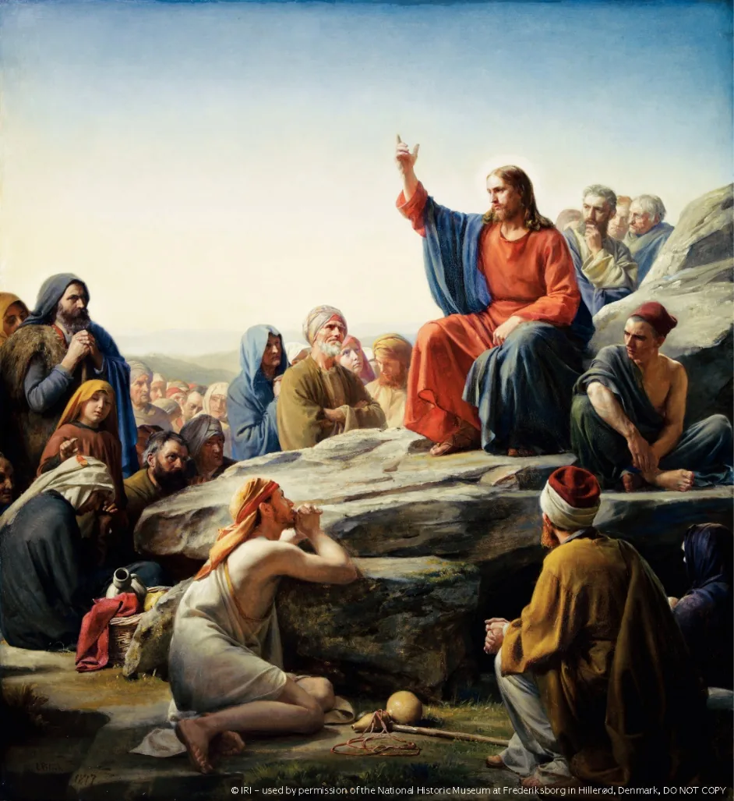
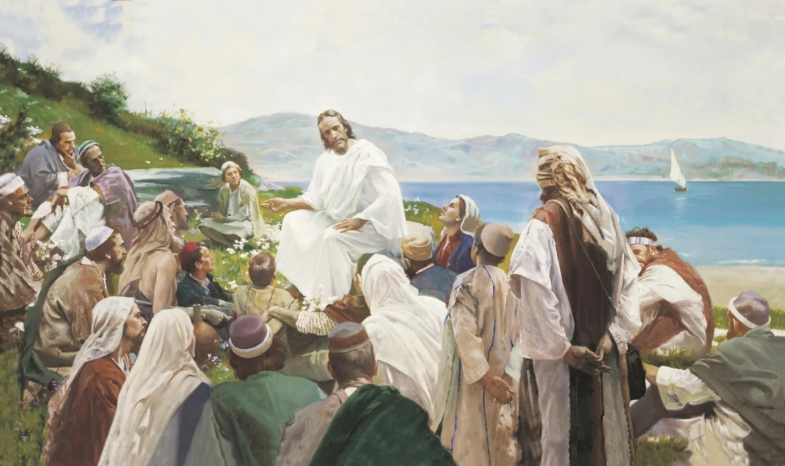
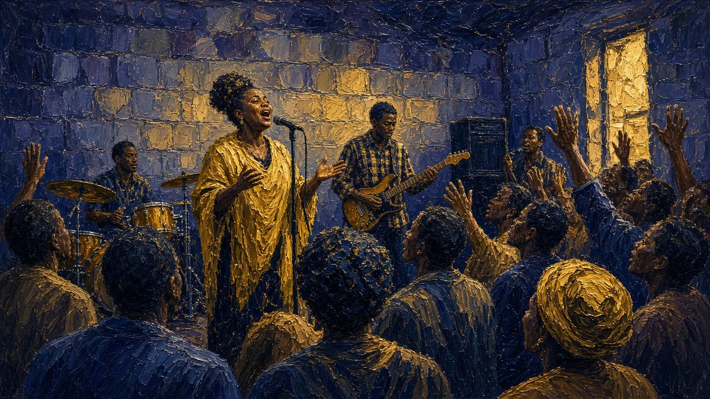

Background image: AI-generated painting of a teacher in a pale robe and head covering standing on a grassy hilltop with one hand raised, as a large crowd in simple robes and head wraps sits on the slope below him, looking out over a wide lake under a gold and indigo sky.
Lecture Roadmap
Three Dimensions of Christian Practice
1 · A Way of Life
Kingdom ethics shape character, relationships, inclusion, enemy-love, and public responsibility.
2 · A Worshiping Community
Liturgy, preaching, saints, music, and spiritual gifts organize communal encounter with God.
3 · A Sacred Rhythm
Sacraments and the liturgical year carry Christians from initiation through death and resurrection hope.
Guiding question: How do repeated practices turn Christian beliefs into a lived identity?
Section I
The Way of Jesus
What kind of person—and what kind of community—does the kingdom of God call into being?
Background image: AI-generated painting of a rocky mountain road at sunset: a man in a blue cloak and head wrap kneels to bandage a wounded, half-clothed man lying on the ground, while a donkey carrying packs stands beside them, with ridges of hills fading into a gold sky.
Jesus and His Message
The Kingdom of God
The organizing theme of Jesus’s preaching
God’s Rule
Not simply a place: God’s active reign over human life and creation.
Already Present
Healings, forgiveness, restored community, and changed lives signal its arrival.
Not Yet Complete
Jesus also points toward a future fulfillment of justice, peace, and renewal.
Christian hope lives in the tension between what God has begun and what has not yet been completed.
The Sermon on the Mount
Jesus traveled throughout Galilee and Judea, teaching and performing miracles
His best-known teaching: the Sermon on the Mount (Matthew 5–7)
Beatitudes (from Latin beatus, “blessed” or “flourishing”): “Blessed are…”

Carl Bloch, The Sermon on the Mount (1877), public domain; image from the original deck
Watch: The Beatitudes
Matthew 5 | Sermon on the Mount: The Beatitudes · The Church of Jesus Christ of Latter-day Saints (Bible Videos) · Open on YouTube ↗
“Blessed Are…”
Blessed are the poor in spirit, for theirs is the kingdom of heaven. Blessed are the meek, for they will inherit the earth. Blessed are the peacemakers, for they will be called children of God.
Matthew 5:3, 5, 9 (NRSV)
Matt. 5:3–12
Their character and privileges
Matt. 5:13–16
Their responsibilities: “You are the salt of the earth… the light of the world”
Why the Beatitudes Matter
Counter-Cultural Values
The Beatitudes emphasize qualities that often contradict worldly values, such as power, wealth, and self-sufficiency.
Kingdom Ethics
They outline the attitudes and behaviors expected of those who belong to God’s Kingdom.
Blueprint for Christian Living
They call believers to embody these virtues: reliance on God, compassionate action, and perseverance through trials.
Matthew’s Antitheses: The Higher Law
“You have heard that it was said… But I say to you…”
Anger, not only murder
“if you are angry with a brother or sister, you will be liable to judgment” (5:22)
Desire, not only adultery
“everyone who looks at a woman with lust has already committed adultery with her in his heart” (5:28)
Enemies, not only neighbors
“Love your enemies and pray for those who persecute you” (5:44)
Beatitudes: “Blessed are…” → Antitheses: the Law reaches inside, to thoughts and emotions.
Watch: The Higher Law
Matthew 5 | Sermon on the Mount: The Higher Law · The Church of Jesus Christ of Latter-day Saints (Bible Videos) · Open on YouTube ↗
Fulfilling the Law
Do not think that I have come to abolish the law or the prophets; I have come not to abolish but to fulfill.
Matthew 5:17 (NRSV)
Beatitudes
Transformation of the believer.
Antitheses
Transformation of the Law: fulfillment through inward motives as well as outward action.
Significance
Fulfillment of the Law (Matt. 5:17); inner transformation (outward action to inward motivations); a call to a higher moral and spiritual standard.
Pause & Reflect
Reading Guide · Review Question 8 (The Sermon on the Mount)
How did Jesus expand upon traditional Jewish laws in the Sermon on the Mount?
Look back: “Blessed Are…” · Matthew’s Antitheses: The Higher Law · Fulfilling the Law
he did not speak to them except in parables, but he explained everything in private to his disciples.
Mark 4:34 (NRSV)
Jesus often taught in parables
From Greek: “setting side by side,” a comparison
Narrative, metaphor, brevity
Parables demand interpretation

Jesus teaching by the sea; modern devotional painting, image from the original deck
Watch: The Prodigal Son
A son wastes his inheritance and comes home expecting to be a servant. Watch what the father does.
Luke 15 | Parables of Jesus: The Prodigal Son · The Church of Jesus Christ of Latter-day Saints (Bible Videos) · Open on YouTube ↗
A Message Centered on Love
“You shall love the Lord your God with all your heart, and with all your soul, and with all your mind.” … And a second is like it: “You shall love your neighbor as yourself.”
Matthew 22:37–39 (NRSV), quoting Deut. 6:5 and Lev. 19:18
Primary message: love God (Deut. 6:5) and love others (Lev. 19:18)
A radical extension of inherited Jewish ethics:
Matt. 5:39: turn the other cheek
Matt. 5:44: love your enemies
Modern devotional painting of Christ seated; image from the original deck
A New Commandment I Give to You
“I give you a new commandment, that you love one another. Just as I have loved you, you also should love one another.” (John 13:34, NRSV)
The kingdom overturns ordinary boundaries of honor and belonging
Outcasts
Lepers, the poor, and people labeled “sinners.”
Social Outsiders
Tax collectors, prostitutes, and Samaritans.
Women
Women appear as disciples, patrons, witnesses, and conversation partners.
Enemies
Love of enemy replaces retaliation and rejects revolutionary violence.
Table fellowship becomes a visible sign that God’s mercy crosses boundaries.
Ethical Foundations
The Ten Commandments
The first table of the Law calls on Christians to worship only God, not to worship images, and to keep the Sabbath day holy.
The second table tells Christians to honor parents and abstain from murder, adultery, theft, false witness, and coveting.
The Sermon on the Mount
Beatitudes contain implicit moral directions.
Jesus pointed to the necessity of controlling one’s actions, thoughts, and emotions.
To love the Lord your God with all your being, and to love your neighbor as yourself.
Ethical Foundations: Paul’s Letters
The Pauline Epistles draw on the Ten Commandments to shape the moral life of Christians
They stress the moral virtues of the Christian life: trust in God, hope in the future God will bring, peace in one’s heart and in the church, and love for all people
They ground the ethical life of the Christian in the life, death, and resurrection of Jesus
And now faith, hope, and love abide, these three; and the greatest of these is love.
1 Corinthians 13:13 (NRSV)
Ethics
Christian Ethics: From Neighbor to Society
Following Jesus involves both personal character and public responsibility
Character
Faith, hope, love, humility, forgiveness, and reconciliation.
Neighbor
The Good Samaritan expands moral concern beyond familiar boundaries.
Society
Churches address poverty, labor, war, racism, human rights, and care for creation.
Liberation
Black, feminist, Latin American, and other theologies begin from experiences of oppression.
Shared scriptures do not automatically produce one political program; Christians debate how love and justice apply.
Section II
Worship & Community
How do words, bodies, buildings, music, and spiritual experience make a community Christian?
Background image: AI-generated painting of an early Christian gathering in a plain room of a house at night: men, women, and two small children sit on floor cushions around a low table holding a plate of bread, clay cups, and a single small oil lamp, with a dark doorway behind them.
Christian Worship and Ritual
The first believers worshiped in the Jerusalem temple and synagogues
The Roman Catholic Church built itself around seven sacraments
Eastern Orthodox churches preserve shared liturgical traditions across regional branches
Protestant reforms, Catholic renewal, and Vatican II each reshaped “the work of the people” (liturgy)
From House Church to Basilica
Christian worship became increasingly public and elaborate after legal toleration and imperial patronage in the 300s
Formal church buildings were erected; church officials dressed for worship in clothing modeled after Roman government garb
A liturgical calendar was developed; church buildings were designed for the community
Large basilicas changed the scale and social character of Christian gatherings
Cultus: honor given to saints in shrines, churches, and other places.
Many Liturgies
Different forms of Eucharistic liturgy existed in various areas.
Protestant Churches
Emphasis on preaching the Bible; Baptism and Holy Communion recognized as the two rites instituted by Jesus; all services in the language of the people.
Charismatic and Pentecostal Worship
Charismatic movement: stresses the use of supernatural gifts of the Holy Spirit
Charismatic: groups inside Roman Catholic, Orthodox, and mainline Protestant churches
Pentecostal: Protestant churches where these practices are the norm
All of them were filled with the Holy Spirit and began to speak in other languages, as the Spirit gave them ability.
Acts 2:4 (NRSV)

AI-generated image: a present-day Pentecostal worship service, with a singer, drums, and guitar.
Gregorian Chant (1)
Gregorian chant: unaccompanied, single-melody singing of Latin liturgical texts.
Benedictine Monks Singing Choir · Jaina Proudmoore · Open on YouTube ↗
Gregorian Chant (2)
Compare: what stays the same between the two recordings?
Monks singing Gregorian Chant in a Catholic Benedictine Seminary · aranflewen · Open on YouTube ↗
Pause & Reflect
Reading Guide · Review Question 10 (Foundations of Christian Worship)
What are the main features of the modern charismatic and Pentecostal movements?
How does ritual carry the Christian story from initiation through death—and beyond death?
Background image: AI-generated painting of an Easter Vigil in a dark stone church with pointed arches and stained-glass windows: a tall paschal candle marked with a cross burns on a gold stand near the altar steps, while rows of worshippers in dark cloaks hold small lit candles.
Worship and Ritual
Baptism and Eucharist
The two practices recognized across nearly all Christian traditions
Baptism
Initiation into Christian life. Water signifies cleansing, death and rebirth, and incorporation into the Church. Infant or believer’s baptism; immersion or pouring.
Eucharist / Communion
Remembers Jesus’s Last Supper. Bread and wine proclaim participation in Christ. Understood as sacrifice, real presence, spiritual presence, or memorial.
Common ritual forms express Christian unity, while their interpretation reveals major denominational differences.
Worship and Ritual
The Seven Sacraments
Initiation
Baptism · Confirmation · Eucharist
Healing
Reconciliation · Anointing of the Sick
Service and Vocation
Marriage · Holy Orders
The sacraments are efficacious signs of grace, instituted by Christ and entrusted to the Church, by which divine life is dispensed to us.
Catechism of the Catholic Church 1131
Orthodox Christianity also celebrates these sacred mysteries; most Protestants recognize baptism and Communion as the rites directly instituted by Jesus.
Pause & Reflect
Reading Guide · Review Question 9 (Foundations of Christian Worship)
What role do the seven sacraments play in Roman Catholic worship?
Look back: Baptism and Eucharist · The Seven Sacraments
How do practices teach Christian belief even when no doctrine is being formally explained?
Beyond the lecture
Beyond the Lecture
Optional Independent Study
Two optional mini-lectures. From House Church to Basilica follows Christian worship from dinner tables in private homes to the great public churches of the 300s. The Rabbit Hole carries the story of worship and practice into the modern world: Vatican II, evangelicals, Pentecostal growth, and the Global South.